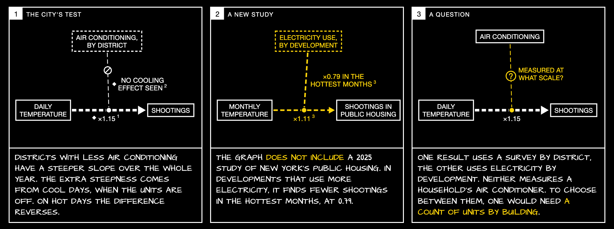

<section id="stripair" class="wide alt">
<p class="eyebrow">Backup · a new study arrives</p>
<h2>A 2025 study that is not in the graph disagrees with the city's test</h2>

<aside>Our registered test by community district (heat-ac-shootings) was confirmed by its rule over the whole year, 0.043 (0.007 to 0.080), but the difference comes from cool days and reverses at 27 °C and above, so the referee did not accept it as a cooling effect. Roberts et al. 2025 (J Urban Health, PMID 40106209) studied New York public housing from 2012 to 2017 and found fewer shootings in the hottest months where developments use more electricity, 0.79 (0.63 to 0.98); the abstract does not state the unit. The two results differ in unit and in proxy. A count of air conditioners by building would decide.</aside>
</section>
